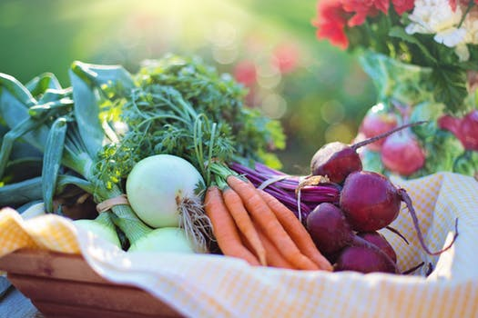
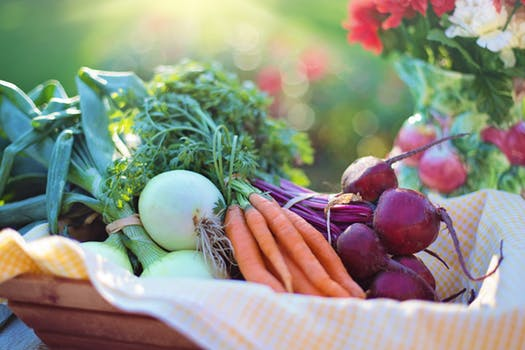

Welcome !! This is a first stop to know how to do urban farming. Here we teach you great tips about home compost prepration, terrace gardening and home kitchen tips.To know more about the serices offered. Please click on the below each images to learn more..
 
